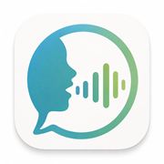

Aufnahme
Wähle eine Übung und starte die Aufnahme. Kamera und Mikrofon laufen erst, wenn die Übung beginnt. Die Amplitude zeigt Sprache orange und Pausen grün.

LogoSound
AufnahmeStandzeit wird nach der Übung berechnet.
Niedrig = ruhiger bei Grundrauschen. Hoch = stärkerer Ausschlag bei leiser Stimme.
Firebase bereit.
Playback
Wähle unten eine gespeicherte Übung oder Aufzeichnung.
Player-Auswahl
Aufnahme
Editor
Neue Übung
1 Pa Ta Ka
Voice-Audio optional.
Verlauf
Audioanalyse
Einstellungen
Patient
Aktive Voice-ID: 21m00Tcm4TlvDq8ikWAM
Niedrig = lebendiger, aber schwankender. Hoch = ruhiger und gleichmäßiger.
Höher hält die Stimme näher an der gewählten Voice-ID.
Höher klingt ausdrucksstärker. Für Übungsanleitungen meist eher niedrig halten.
Speaker Boost macht die Stimme präsenter und klarer.
ChatGPT
Kalibrierung
Playback
100% ist normal. 200% und mehr verstärken die Wiedergabe zusätzlich.
Einstellungen lokal gespeichert.
Hilfe
Wähle eine Übung und starte die Aufnahme. Kamera und Mikrofon laufen erst, wenn die Übung beginnt. Die Amplitude zeigt Sprache orange und Pausen grün.
Der aktuelle Text wird groß eingeblendet. Vorherige und nächste Wörter bleiben sichtbar, damit der Patient flüssiger lesen kann.
Erstelle eigene Übungen mit Silben, Vokalen, kurzen Sätzen oder Karaoke-Text. Tempo, Wiederholungen und Voice-Begleitung werden mit der Übung gespeichert.
Spiele die Aufnahme ab und verfolge die Position in der Wellenform. Der Play/Pause-Button schaltet zwischen Abspielen und Pausieren um.
Wähle eine Aufnahme, markiere einen Bereich und zoome hinein. Die Analyseposition folgt der Wiedergabe und aktualisiert Lautstärke, Frequenz und Impulse live.
Lege Patient, ElevenLabs, ChatGPT, Empfindlichkeit und Wiedergabe-Lautstärke fest. Patient und Einstellungen gelten für die nächsten Aufnahmen.